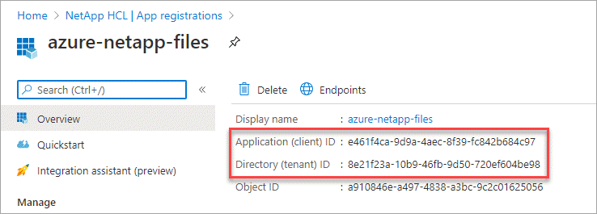
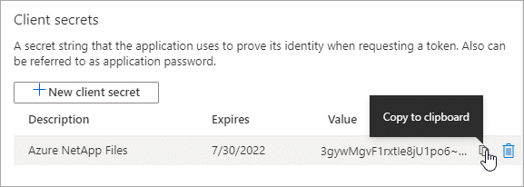
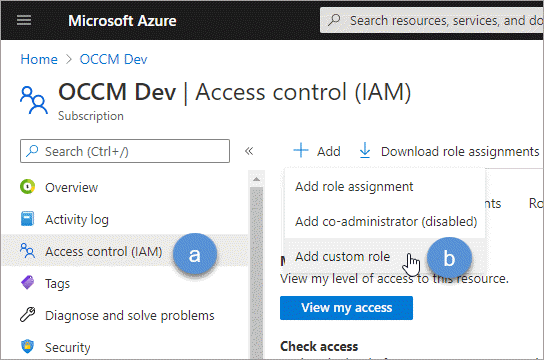
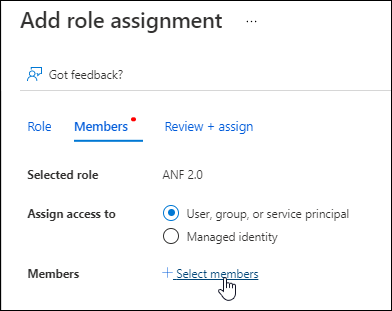
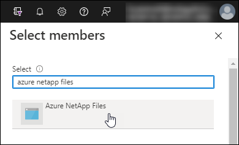

문서 변경 요청
문서 변경 요청 이 페이지 편집
이 페이지 편집 기여하는 방법 자세히 알아보기
기여하는 방법 자세히 알아보기Azure AD 응용 프로그램을 설정합니다
Cloud Manager에서 Azure NetApp Files를 설정하고 관리할 수 있는 권한이 필요합니다. Azure AD(Active Directory) 응용 프로그램을 생성 및 설정하고 Cloud Manager에 필요한 Azure 자격 증명을 획득하여 Azure 계정에 필요한 권한을 부여할 수 있습니다.
AD 응용 프로그램을 만듭니다
Cloud Manager가 역할 기반 액세스 제어에 사용할 수 있는 Azure AD 애플리케이션 및 서비스 보안 주체를 생성합니다.
Active Directory 응용 프로그램을 만들고 응용 프로그램을 역할에 할당하려면 Azure에 적절한 권한이 있어야 합니다. 자세한 내용은 을 참조하십시오 "Microsoft Azure 문서: 필요한 권한".
-
Azure 포털에서 * Azure Active Directory * 서비스를 엽니다.

-
메뉴에서 * 앱 등록 * 을 클릭합니다.
-
응용 프로그램을 만듭니다.
-
새 등록 * 을 클릭합니다.
-
응용 프로그램에 대한 세부 정보를 지정합니다.
-
* 이름 *: 응용 프로그램의 이름을 입력합니다.
-
* 계정 유형 *: 계정 유형을 선택합니다(모두 Cloud Manager와 연동함).
-
* URI 리디렉션 *: 이 필드는 비워 둘 수 있습니다.
-
-
Register * 를 클릭합니다.
-
-
응용 프로그램(클라이언트) ID * 와 * 디렉터리(테넌트) ID * 를 복사합니다.

Cloud Manager에서 Azure NetApp Files 작업 환경을 생성할 때 애플리케이션의 애플리케이션(클라이언트) ID와 디렉토리(테넌트) ID를 제공해야 합니다. Cloud Manager는 ID를 사용하여 프로그래밍 방식으로 로그인합니다.
-
Cloud Manager가 Azure AD에서 인증에 사용할 수 있도록 애플리케이션에 대한 클라이언트 암호를 생성합니다.
-
인증서 및 비밀 > 새 클라이언트 비밀 * 을 클릭합니다.
-
비밀과 기간에 대한 설명을 제공하십시오.
-
추가 * 를 클릭합니다.
-
클라이언트 암호 값을 복사합니다.

-
이제 AD 응용 프로그램이 설정되고 응용 프로그램(클라이언트) ID, 디렉터리(테넌트) ID 및 클라이언트 암호 값을 복사해야 합니다. Azure NetApp Files 작업 환경을 추가할 때 Cloud Manager에 이 정보를 입력해야 합니다.
앱을 역할에 할당합니다
서비스 보안 주체를 Azure 구독에 바인딩하고 필요한 권한이 있는 사용자 지정 역할을 할당해야 합니다.
-
다음 단계에서는 Azure 포털에서 역할을 만드는 방법을 설명합니다.
-
가입을 열고 * IAM(액세스 제어) * 을 클릭합니다.
-
추가 > 사용자 지정 역할 추가 * 를 클릭합니다.

-
[기본 사항] * 탭에서 역할에 대한 이름과 설명을 입력합니다.
-
JSON * 을 클릭하고 JSON 형식의 오른쪽 상단에 나타나는 * Edit * 를 클릭합니다.
-
다음 권한을 actions 아래에 추가합니다.
"actions": [ "Microsoft.NetApp/*", ], -
저장 * 을 클릭하고 * 다음 * 을 클릭한 다음 * 생성 * 을 클릭합니다.
-
-
이제 방금 만든 역할에 응용 프로그램을 할당합니다.
-
Azure 포털에서 * Subscriptions * 서비스를 엽니다.
-
구독을 선택합니다.
-
IAM(Access Control) > 추가 > 역할 할당 추가 * 를 클릭합니다.
-
Role * 탭에서 생성한 사용자 지정 역할을 선택하고 * Next * 를 클릭합니다.
-
Members* 탭에서 다음 단계를 완료합니다.
-
사용자, 그룹 또는 서비스 보안 주체 * 를 선택한 상태로 유지합니다.
-
구성원 선택 * 을 클릭합니다.

-
응용 프로그램의 이름을 검색합니다.
예를 들면 다음과 같습니다.
-

-
응용 프로그램을 선택하고 * 선택 * 을 클릭합니다.
-
다음 * 을 클릭합니다.
-
검토 + 할당 * 을 클릭합니다.
이제 Cloud Manager의 서비스 보안 주체에 해당 구독에 필요한 Azure 권한이 있습니다.
-
-